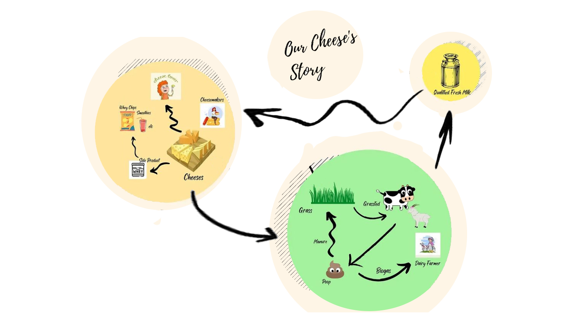
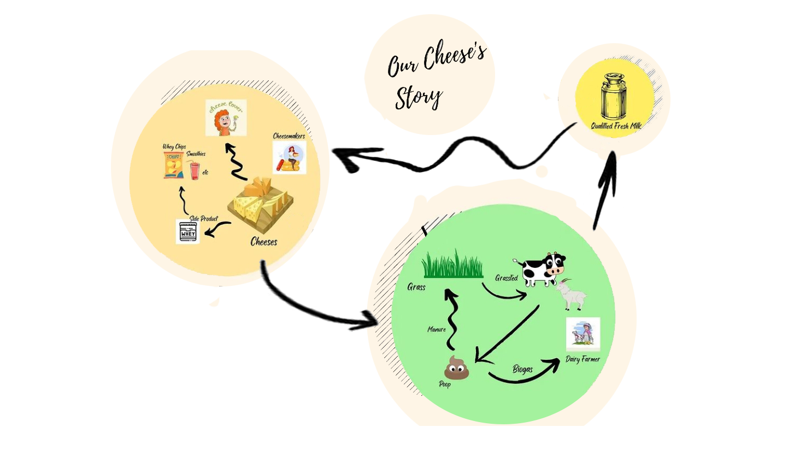

Cerita keju kami
Rumah Keju Jogja merupakan usaha bersama dari sebuah komunitas pembuat keju artisan lokal. Usaha ini berawal dari Kerinduan kami yang sebagian besar adalah ibu rumah tangga, bisa menyediakan makanan yang sehat dan terjangkau, dalam hal ini keju.
Rumah Keju Jogja, berdiri 16 Februari 2018 merupakan komunitas kecil dari para pembelajar tentang keju natural, berharap tumbuh bersama dari peternak hingga penikmat keju di Indonesia melalui edukasi
Serta kesadaran kami bahwa keju yang selama ini kami konsumsi dan juga dikonsumsi secara luas di Indonesia adalah keju olahan dengan kandungan susu paling tinggi hanya 16% (berdasarkan komposisi keju olahan yang beredar di pasaran).
Ide usaha kami ini diperkuat pula dengan adanya produksi susu sapi dan kambing segar yang tersedia di Sleman, Jogja yang cukup melimpah dengan kualitas yang cukup bagus untuk membuat keju.
Maka sejak tahun 2019, Rumah Keju Jogja mulai produksi keju natural sebagai usaha tumbuh bersama. Kami sebut usaha tumbuh, karena berawal dari ide dan energy dianugerahkan oleh Tuhan YME kami mulai usaha ini. Sampai saat ini kami mulai bisa mengaryakan beberapa karyawan walaupun masih harian. Pada tahun 2022 Rumah Keju Jogja memiliki badan usaha PT.
Cerita keju kami
Kedaulatan pangan lokal yang natural dan homemade melalui usaha pengolahan dan edukasi keju dan olahan susu lainnya secara kreatif dan inovatif.
Company Core Values
Halal
Keju Kejugja sudah mendapatkan sertifikat Halal
Artisan
Produksi yang kami lakukan tidak skala pabrik, dibuat secara spesial sesuai dengan style originalnya
Local
Susu merupakan bahan utama yang kami olah merupakan hasil cinta dari peternak lokal di Sleman, Pembuat kejunya pun dari orang lokal.
Natural
Keju Kejugja terbuat dari susu segar berkualitas prima, enzyme vegan atau calf rennet, kultur dan garam laut.
Education
Mengedukasi konsumen tentang keju, Kami juga mengadakan pelatihan dasar membuat keju, sehingga masyarakat sadar dan menghargai keju natural
Fairtrade
Susu yang berkualitas prima dari peternak kami beli beli dengan harga layak, sehingga peternak mendapatkan margin yang wajar. Begitulah pula dengan tenaga kerja full time dan part time kami hargai dengan layak.
Traceability
Karena kelokalannya tersbut maka keju Kejugja mudah terlacak, konsumen bisa mengetahui dari mana dan bagaimana susu sampai dengan keju dihasilkan.
Pahlawan Pangan
Menjadi konsumen kejugja otomatis menjadi pehlawan pangan, karena sudah mendukung kemandirian pangan lokal dalam hal ini keju.
Gender Equality
Pembuat keju serta tim kami sebagian besar adalah perempuan. Dan kami tetap membuka hati serta kesempatan untuk berusaha bersama tanpa deskriminasi gender.
Sustainability
Dengan menjalankan semua nilai dalam Rumah Keju Jogja, kami berharap selalu bisa meneruskan proses tumbuh bersama ini secara berkelanjutan.